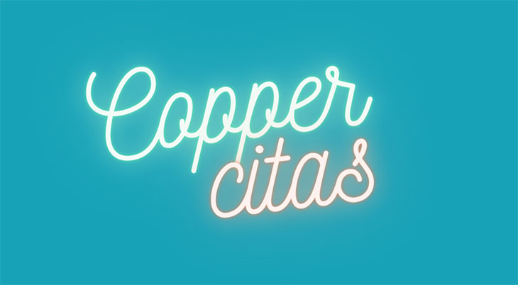

Entonces, ya sea estando con su pareja o buscando el amor en su vida durante la cuarentena, aquí hay algunas ideas para citas realmente interesantes.
Ideas de citas virtuales
1. Juega a un juego antiguo de 20 preguntas.
Esta opción puede funcionar con éxito tanto en persona como en una llamada telefónica.
Conoce las reglas: piense en una persona, lugar o cosa. Luego, pídele a la otra persona que haga hasta 20 preguntas con una única respuesta: sí o no, para averiguar qué es lo que está pensando.
Para una versión un poco más íntima, solo haceros 20 preguntas sobre vosotros mismos, de ida y vuelta. El objetivo, por supuesto, es conocer más a la otra persona y olvidar que estabas jugando un juego.
2. Cocina lo mismo en la distancia.
Para las parejas que están separadas, o aquellas que desean poder ir a una cena clásica para una tercera cita, intentad cocinar lo mismo juntos y luego comerlo juntos también.
"Mi hermano y su novia cocinaron el mismo postre en FaceTime, ¡y realmente lo disfrutaron!" me dijo un amigo. "Ella le envió la receta por adelantado para que pudiera comprar bien los ingredientes, y luego ellos prepararon y cocinaron (y comieron) en FaceTime".
¡Suena delicioso!
3. Haceros las 36 preguntas.
Siempre he querido una excusa para probar las 36 preguntas. Ya sabes, las 36 preguntas, en las que tienes contacto visual con alguien y os hacéis 36 preguntas personales segmentadas en tres partes, como lo describe el psicólogo Arthur Aron, en un intento de acelerar la intimidad. Bueno, ¿qué mejor momento para intentarlo?
Para los que lo hagan por videollamada, un truco que os damos es colocar la imagen de la cara de la otra persona cerca de nuestra cámara, así parecerá que os estáis hablando cara a cara. Sin duda pasarás un momento esclarecedor al analizar estas 36 preguntas juntos y os daréis cuenta de si estáis hechos el uno para el otro.
4. Juega juegos en la aplicación Houseparty.
Houseparty es una aplicación de video chat para varias personas con varias opciones de juego, que incluyen juegos de preguntas y respuestas, juegos de adivinanzas y juegos de dibujo, a los cuales puedes jugar sin salir de la aplicación en tu teléfono o computadora.
Es una gran idea de citas virtuales para cuando tienes ganas de hacer algo interesante en una primera o segunda cita, pero no estás dispuesto a invertir en un plan romántico más elaborado. (Además, no necesitas un plan de cuento de hadas para conquistar. Los sorprenderás con tu personalidad).
5. Prueba un juego en Jackbox Party Pack.
Para esta idea de citas virtuales, uno de vosotros necesitará tener un Jackbox Party Pack, se trata de un paquete de juegos multijugador para jugar en cualquier dispositivo (ordenador portátil, teléfono inteligente, televisión inteligente, etc.). Tienen un precio asequible (menos de $ 30) e incluso si tras comprarlo decide no usarlo más en una cita, son una excelente manera de conectarse con amigos o compañeros de cuarentena socialmente distanciados. Para conocer más formas de jugar con amigos a través de Zoom o FaceTime, haga clic aquí.
6. Presenta tu cita a tus compañeros de cuarentena, ¡especialmente si son tus padres!
¡Vaya, no suena divertido! No juzgues del todo todavía, porque conozco a alguien que realmente hizo esto y dijo que era absolutamente divertido. Si te encuentras en una pausa en la conversación, lleva a tu cita virtual a dar un paseo por la casa. Si estás en cuarentena con otras personas, nunca sabes con quién se encontrará y quién se agregará a la conversación. En esta época, todo vale.
7. Noche de películas con la extensión Netflix Party.
Netflix Party es una extensión de Chrome que sincroniza la reproducción de video y agrega una función de chat grupal a cualquier cosa que desee ver en Netflix. ¿Mi recomendación? Ver una película notoriamente mala sobre algo más serio.
De esa manera, puede unirse a las partes cursis, reírse de los chistes malos y mostrar tu sentido del humor con comentarios ingeniosos. Es difícil recrear el romance entre los brazos y el asiento del cine cuando estamos separados, así que apóyate en la alternativa.
Ideas para una cita nocturna en casa
8. Dedícale un tiempo y un espacio a las relaciones sexuales con tu pareja.
Es posible que se sorprenda (¿o tal vez no?) de lo rápido que pueden pasar los días sin ningún contacto íntimo entre vosotros en cuarentena. Después de todo, ¡estáis juntos todo el tiempo! Pero es común asumir que el sexo simplemente va a suceder, en lugar de crear un espacio para él, lo que puede terminar conduciendo a una menor intimidad. Por lo tanto, planificar una noche intencional o un tiempo dedicado para estar juntos puede ser extremadamente valioso.
9. Tener una noche de spa.
Todos podemos ser un poco territoriales con nuestros productos de cuidado personal favoritos, así que ¿por qué no tomarnos una noche para pedir una tregua? Cualquier producto estará disponible durante la noche de cita en el spa en casa: la mascarilla favorita, la crema preferida, un poco de esto, un poco de aquello. Termina con un masaje y escapa de la realidad por un momento.
10. Turnaros para cocinar una cena romántica.
En mi casa, durante la cuarentena, la cena suele ser una tarea conjunta. Juntos, acordamos un "menú", si quieres llamarlo así; uno de nosotros cocina la proteína, uno de nosotros cocina el acompañamiento, y quien quiera que lo desee hace la ensalada, generalmente él, si soy sincera. Esto lo hacemos teniendo en cuenta los días y horarios del otro.
Es por eso que, recomiendo una noche de cocina dedicada: una persona toma el control total de una noche y la pareja toma el control de otra. La comida es una sorpresa; y este regalo es no tener que mover un dedo, una acción muy significativa en estos días.
11. O, si ha estado cocinando mucho, cambia las cosas y pide a domicilio.
Apoya a tu restaurante local favorito y pasa el tiempo que de otra manera necesitarías para preparar tu comida haciendo otra cosa juntos, como dar un paseo o jugar un juego. Para mayor romance, pide desde un lugar particularmente nostálgico.
12. ¡Limpien el apartamento juntos!
¿Ya no suena tan divertido salir conmigo? Sé que probablemente estás pensando, WTF, pero escúchame. De manera similar a mi recomendación de que hagas una comida a una persona, creo que hay algo que decir acerca de dedicar una cantidad de tiempo específica, finita y determinada para abordar algo al completo, en lugar de tener que hacer un mantenimiento constantemente. Esta es una parte particularmente agotadora de la cuarentena.
Siempre hay platos que lavar, siempre un rincón desordenado, siempre una superficie polvorienta, etcétera, etcétera. Por lo que os animamos a limpiar, en lugar de hacerlo poco a poco y durante todos los días, dediquen una hora a trabajar juntos. ¡Conviértalo en una actividad! Y, ¡Recompénsese después! Puedes hacerlo escuchando buena música para hacerlo más ameno. ¿El beneficio? Disminuirá diez veces la limpieza que haces en la casa a cada momento.
13. Salid a caminar a un lugar que os guste.
Los paseos son divertidos, terapéuticos para la mente y su cuerpo también lo agradecerá. A mi me gusta darlos con frecuencia, especialmente después de un día de estar sentada dentro de las mismas cuatro paredes. Dicho esto, tener la capacidad de hacerlo es un privilegio, que depende de todo, desde su ubicación hasta la cantidad de tiempo libre que pueda dedicar.
Siempre que podáis salid a dar un paseo juntos, vale la pena dar la vuelta a la manzana. Si puede, camina hasta un lugar que le guste: su parque favorito o incluso una farola. Hay algo que decir a favor de una conversación tranquila al aire libre: crear su propio pequeño mundo en medio del de los demás. (Y, por supuesto, recuerda usar una mascarilla cuando salgas en público).
14. Intenta acertar en un rompecabezas o un puzle.
No puedo prometer que esto tampoco te hará pelear. Pero sí que te hará reír. Y a veces, eso es igual de importante. No hay nada como hacer un rompecabezas bajo presión. Pon un temporizador dependiendo de cuántas piezas haya en su rompecabezas y listo. Sin teléfonos, sin televisión, sin interrupciones. Sólo vosotros dos.
15. Tened una clase de cocina virtual.
Coge una idea clásica de una cita nocturna y conviértela en una idea clásica de una cita nocturna en casa. Internet está repleto de clases de cocina virtuales y Zoom, aunque lo que más me interesan son las experiencias online de Airbnb.
Puedes ayudar a apoyar a personas de todo el mundo tomando lecciones de cocina individuales con ellos en clases como "Tapas españolas como las que solía hacer mi abuela" con una mujer en España, o aprender "Todo sobre el café con un experto colombiano & Barista ". También son extremadamente asequibles, en su mayoría por menos de $ 25 por persona por clase.
16. Hacer juntos una clase de ejercicios en línea.
Ahora, existe prácticamente una opción de clase de entrenamiento en línea para todos los gustos. Hemos reunido una lista de algunos de nuestros favoritos aquí. También debes consultar este resumen de entrenamientos positivos para el cuerpo y la grasa que puede perder desde casa.
Si no estás de humor para hacer ejercicio en estos días, totalmente comprensible. Pero puede ser una buena manera de desconectarnos del resto del mundo juntos por un tiempo.
Una nueva forma de tener citas
Citas breves por video de 3 minutos.
Ahorra tiempo y establece conexiones reales.
Saber más